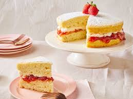

Victoria Sponge Cake

Home
Victoria sponge cake was a favorite layer cake of Queen Victoria and has become a classic British cake served at afternoon tea and other celebrations. It's filled with strawberry jam and vanilla whipped cream. Dust powdered sugar over the top if you'd like.
- Prep Time: 20 mins
- Cook Time: 20 mins
- Additional Time: 1 hr
- Total Time: 1 hr 40 mins
- Servings: 10
Ingredients
- For The cake
- baking spray
- 1 ½ cups all-purpose flour (such as Gold Medal)
- 1 ½ teaspoons baking powder
- ¾ teaspoon kosher salt
- 1 tablespoon cornstarch
- 1 cup granulated sugar
- ½ cup unsalted butter or margarine, softened
- 2 large eggs, room temperature
- 2 teaspoon vanilla extract
- ½ cup whole milk, room temperature
- ½ cup strawberry or raspberry preserves
- For the whipped cream
- ¾ cup heavy whipping cream
- 1 teaspoon vanilla extract
- To garnish
- 2 tablespoons powdered sugar, plus more for dusting
- fresh strawberrie (Optional)
Steps
- Gather all ingredients. Preheat the oven to 325 degrees F (160 degrees C). Grease two 8-inch round cake pans with baking spray; line bottoms with parchment paper. Lightly spray parchment paper with baking spray.
- Sift flour, cornstarch, and baking powder into a medium bowl; whisk in salt and set aside.
- Beat sugar and butter with an electric mixer on medium speed until light and fluffy, about 3 to 4 minutes, stopping to scrape down sides as needed. (The mixture should be noticeably lighter in color.)
- Beat in eggs, one at a time, on medium speed, allowing each egg to blend into butter mixture before adding the next, 1 to 2 minutes total. Beat in 2 teaspoons vanilla. With mixer on medium-low speed, add flour mixture in 3 batches, alternating with milk, beating until just combined after each addition.
- Evenly divide batter between prepared pans and spread into an even layer using a small offset spatula. Firmly tap pans on a kitchen towel-lined counter several times to help get rid of any large bubbles in the batter.
- Bake in the preheated oven until a toothpick inserted in the center comes out clean, about 18 to 22 minutes. Cool cakes in the pans for 10 minutes, then turn the cakes out onto a wire rack. Let stand, parchment side down, on wire racks until cooled completely, about 1 hour.
- Remove and discard parchment paper. Place 1 cake layer on a serving plate. Stir preserves in a small bowl until mostly smooth; spread in an even layer over cake.
- To make vanilla whipped cream: Whisk heavy whipping cream, powdered sugar, and 1 teaspoon vanilla extract by hand in a large bowl until stiff peaks form, about 2 minutes.
- Dollop over jam, then spread into an even layer.
- Top with remaining cake layer. Dust with powdered sugar and garnish with strawberries (if using).